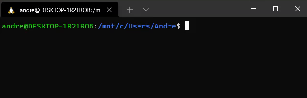

Windows Subsystem for Linux¶
Installation and usage of pyfurc on Windows systems has only been tested using the Windows Subsystem for Linux (WSL). This will be the prerequisite and is covered in the following section. However, running Ubuntu inside a VirtualBox should work fine as well.
Installing Windows Subsystem for Linux¶
For installing WSL follow the 6 manual installation steps from this guide on microsoft.com.
Note
In step 6 make sure to install Ubuntu.
Note
If you run into errors you you may need to enable virtualization in your bios/UEFI. How to do this is manufacturer dependent.
For Lenovo Thinkpads there is this guide for example.
Installing Windows Terminal¶
After WSL is installed successfully, install Windows Terminal from the Microsoft Store (free).
You now have access to a Ubuntu system running inside your Windows 10 system.
Accessing the Ubuntu Subsystem¶
To access Ubuntu start Windows Terminal from the Start Menu and click on the + in the window frame to open a new tab. Select Ubuntu:

Getting started in Ubuntu¶
After opening a Ubuntu tab in Windows Terminal you are prompted with a Ubuntu command line which should look similar to this:
The path shown in blue is the directory you are currently in.
The directory /mnt/c/Users/Username is your user directory on the
Windows filesystem (i.e. C:\Users\Username) which gets automatically
mounted to /mnt/c/ in the Ubuntu subsystem
(if the label of your system partition is C).
Note
Ubuntu has its own file system separate from your Windows file system.
To access the Ubuntu file system from Windows type \\wsl$ into the
address bar of a Windows Explorer window. You can then navigate to
your home directory (Ubuntu > home > username).
To access the Windows file system from the Ubuntu terminal use the
mounted drive /mnt/<windows partition label>, e.g. /mnt/c/
We don’t want to work in the Windows filesystem and instead switch to the Ubuntu filesystem.
Each user in Ubuntu has their own home directory which can be accessed
through the shortcut ~. Using the cd (change directory) command,
we can go to our home directory:
cd ~
With pwd (print working directory) we can verify that we are indeed in
our Ubuntu home directory:
See also
The Linux command line for beginners – an official Ubuntu guide
Installing pyfurc¶
Now that you have a running Ubuntu and know how to access it, continue with this guide to install pyfurc.